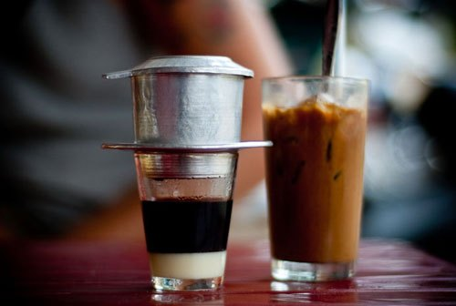

Vietnamese Iced Coffee

Note
While part of the aethestic is to use a Vietnamese coffee filter
. However, it is not required, any type of black coffee will do.
Ingredients
- a cup of esspresso of your choice (instant coffee, moka pot, esspresso machine, etc)
- Condense Milk
- Full cream Milk
- Iced
Instructions
- heat the esspresso ,if it is cold, up to 80degree in a regular glass, do not use esspresso cup
- add the condense milk up to a fifth of the espresso's volume
- stir gently till they are well mixed
- adding ice to the cup
- pour full cream milk on top of the ice